Using Plugins¶
In this chapter, we will show you how to apply effects plugins using the In-line mixer or the separate mixer window.
📝 Note: Scanning plugins and setting up a favorites plugin list are done on the Settings tab, Plugins page. Check the reference section Reference: Settings > Plugins to learn more about that.
The In-line Mixer¶
The In-line mixer section resides along the right side of the Edit, and completes the left-to-right signal flow on each track. You can open and close the Mixer using the open/close icon at the upper right, or also using keyboard shortcut M.
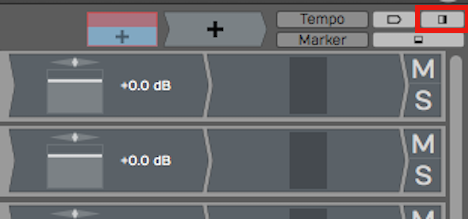
Button to Open Close the In-line mixer (M)
Whenever you create a new track, it will automatically have a Volume & Pan plugin and a Level Meter plugin inserted. These behave just like any other plugin. You can change the order, remove them, or even add additional instances of them on the same track.
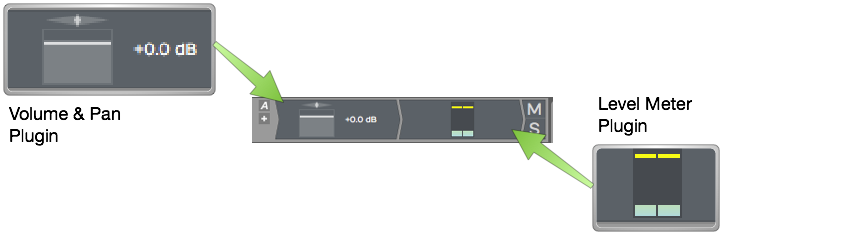
Default Plugins Volume & Pan and Level Meter**
For example, you might want a level meter before and after a compressor. Of course, you can add other plugins, both built-in and third party to the Mixer section.
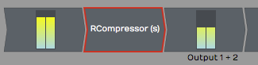
Level Meter Before and After a 3rd Party Compressor
💡 Tip: Each Mixer channel is stereo. If the track contains mono clips, you will still typically want to choose stereo versions of plugins for the Mixer, as mono plugins will only effect the left side of the signal.
Adjusting the Size of the In-line Mixer Section¶
Try moving the mouse pointer from the arrangement slowly to the Mixer section. As your pointer crosses over from the arrangement to the Mixer, notice the vertical highlight line.
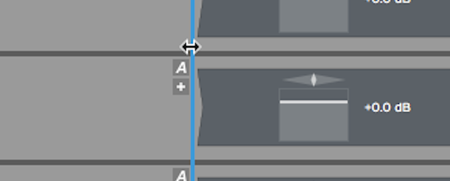
Resizing the Mixer
Drag the highlight line to the left to expand the Mixer section. If you drag it right, then you can make the Mixer section smaller. All of the plugins on the Mixer are dynamically resized.
💡 Tip: If you accidentally delete, change, or move a plugin, or simply change your mind, click Undo on the Menu (Ctrl + Z / Cmd + Z) to restore it.
Working with Plugins¶
You can fully customize the mixer for each track by inserting a chain of plugins. This is one of the most compelling features of Waveform, as there is no need to switch between a horizontal track view and a vertical console view.
Here are the essentials for working with plugins in the Mixer:
Inserting Plugins - To insert additional Waveform plugins or third-party plugins, drag the Plugin Object to a track and then select the plugin that you would like from the list.
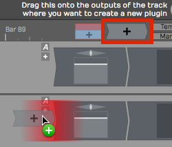
Drag the Plugin Object to Insert a Plugin
For third-party plugins, the UI window will pop up. Apart from the core built-in plugins, each has its own graphical user interface.
Right-click to Insert - Right-click on any existing plugin and select Add new plugin. This pulls up the plugin selector menu and you may pick any plugin to add. It will be added to the left of plugin you started from.
📝 Note: If you don't see some of your plugins, review the previous chapter that details how to scan your system for all available plugins.
Plugin properties - To select a plugin, click on it. When selected, its properties show a wide variety of settings and actions related to that plugin. Most of the built-in plugins have the entire user interface in properties.
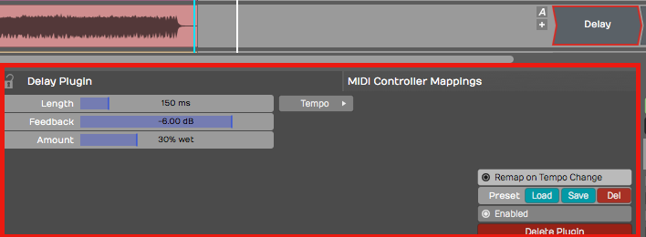
Select a Plugin to See its properties
Duplicating Plugins - To duplicate a plugin, select it and press D. This gives you a new instance of the plugin to drag to a different position or to another track.
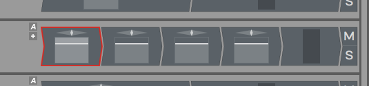
Duplicate Plugins by Pressing D
Deleting Plugins - To delete a plugin, simply select the plugin and hit Delete or Backspace. You may alternatively click the red Delete Plugin button in properties.
Moving Plugins - To move a plugin from one track to another track, simply grab the plugin and drag it wherever you would like to put it, even to a different track. As you drag, a red insert illumination will appear showing where the plugin will be after you drop it.
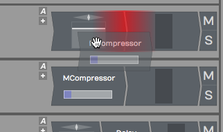
Moving a Plugin
Copying Plugins - To copy a plugin, hold down Opt / Alt and drag it to where you want the copy. Alternatively, press D to duplicated it then drag the duplicate to the target location.
Bypassing a Plugin - To bypass a plugin, select the plugin then turn off Enabled in properties. Or, simply select the plugin and press the keyboard shortcut F. A bypassed plugin appears with a red X through it on the Mixer.
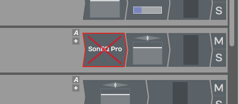
A Bypassed Plugin
💡 Tip: You can bypass several plugins at once, by first selecting them and then pressing F.
Assigning a Quick Control Parameter¶
You can assign a quick control parameter to any instance of a plugin. This allows you immediate access to tweak one parameter without mousing back to properties or opening the UI for the plugin. For example, I often set the mix control for delay plugins as quick control.
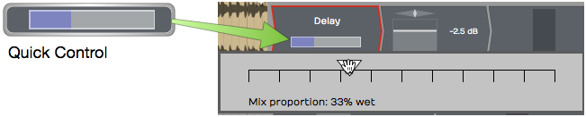
Delay Mix Set as a Quick Control Parameter
To set up a quick control parameter, right-click the plugin and choose Select quick control parameter. Next, choose which parameter to use.
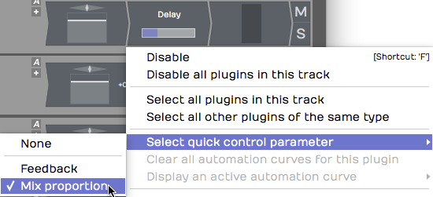
Right-click to Set the Quick Control Parameter
Waveform Delay has only two parameters, but many third-party have many more to to choose from.
Third-Party Plugins¶
Third-party plugins are inserted in the same way as built-in plugins. One difference is that the UI (user interface) does not appear in properties. Each plugin has its own UI window.
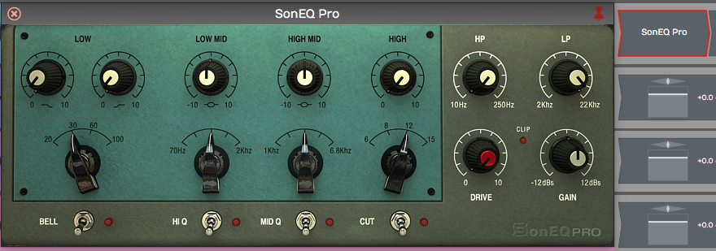
Sonimus SonEQ, an Example 3rd Party Plugin
To open the UI for a third-party plugin, double-click the plugin in the Mixer.
📝 Note: You can change to a single-click to open plugin windows the Settings Tab, Plugins page. The parameter is Opening Plugin Windows.
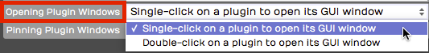
Setting to Open Plugins with a Single-click
Cmajor Patches¶
Waveform can host Cmajor patches — audio effects and instruments written in
the Cmajor language and distributed as .cmajorpatch bundles. Patches are
compiled on the fly when they load, so they run as native plugins inside your
Edit and insert exactly like any other plugin.
To use them, first tell Waveform where to find your patches: open Settings > File Locations and add a folder under Directories to search for Cmajor patches. Scan for plugins, and the patches will then appear in the plugin selector under the Cmajor format. If a patch contains an error, the message is shown on the plugin slot so you can fix it. A built-in Pro54 example synth is installed automatically the first time you run Waveform.
📝 Note: Cmajor support is available on Apple Silicon macOS and Windows. It is not available on Linux or on Intel-only Macs. There is no edition restriction.
Searching for Plugins¶
The Waveform Browser includes a Search tab. This allows you to search for plugins. When you find one you want to use, drag it to your Edit. Here are the steps:
- Open the Browser and click the Search tab
- Type in a few characters of the name of the plugin
- From the search results, drag the plugin from the Browser to the Mixer.
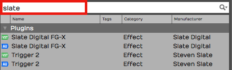
Searching for Plugins Using the Browser, Search tab
The search uses an index that includes plugin names, tags, and manufacturer. We covered how to set tags in the previous chapter.
💡 Tip: It often helps to disable the options for Loops and Presets when searching for a specific plugin. This gives you more targeted results.
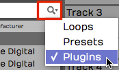
Limiting Search Filters to Plugins
Using Master Plugins¶
To apply processing to the full stereo mix, add plugins to the master track or the mixer's master channel. The drop target says Drop Master Plugins Here.
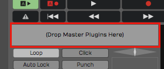
Master plugins area
Typically, you may put a bus compressor, a limiter, and maybe an EQ on the master. Another great option is Waveform's own Final Mix plugin, which combines all of those functions in to one package expressly designed for use on a full mix.

Master Mix inserted on the master
💡 Tip: You can right click the Drop Master Plugins Here area then choose Add new plugin to open the plugin selector menu. You may find this a bit faster than dragging the plugin object down there!
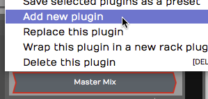
Right-click to Add new plugin**
Plugin Sidechains¶
Plugins that support a sidechain input have a sidechain assignment list at the upper left in the plugin header. Simply pick which track you want to route to the sidechain.
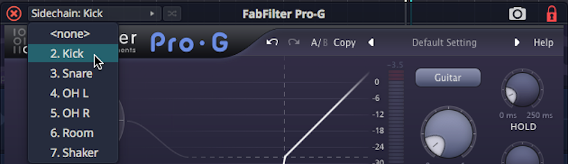
Selecting a Sidechain Input
In the above example, we have routed the kick track to the sidechain input of a gate on the bass track. It's a common trick to lock the bass to the kick.
Video Clip: Here is a video tutorial demonstrating how to use the plugin sidechain feature.